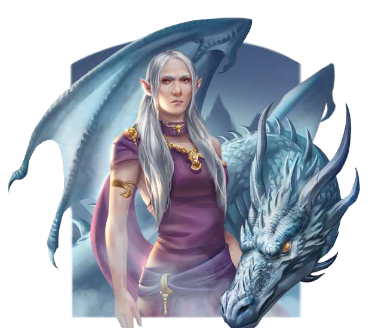

"Vergehe, Unwürdiger. Auch wenn die Hochelfenstädte Mandalya und Vayavinda nicht mir untertan sind, dulde ich keinen Ungehorsam. Deine Knochen werden mir weitaus bessere Dienste leisten."
Allein der Name "Pardona" lässt Kundigen das Blut in den Adern gefrieren. Kaum ein Wesen löst bei den verschiedenen Völkern eine solche Angst aus wie die elfengestaltige Zauberin. Die bei den Elfen als Bhardona (Isdira: Begehrensauslöserin) bekannte Unheilsbringerin wurde einst vom Alten Drachen Pyrdacor erschaffen. Bis heute verluchen die Elfenvölker ihren Namen und machen sie für den Fall der Hochelfen verantwortlich. Die Firnelfen im ewigen Eis haben sogar ihre ganze Existenz dem Kampf gegen ihr Wirken verschrieben. Es heißt, sie sei über 5.000 Jahre alt und die Erschafferin zahlloser Chimären, zuvorderst der Gletscherwürmer, Harpyien und Neunaugen. Es wird zudem gemunkelt, dass Pardona die höchste Dienerin den Namenlosen sei und all ihr Wirken nur darauf abziele, dem gefallenen Gott den Weg zu bereiten, zu alter Macht zurückzukehren. Vor wenigen Jahren unterlag sie einer Allianz der Drachen und verbringt gegenwärtig Zeit im Güldenland, um dort zu alter Stärke zurückzuinden. Bis dahin verfolgt eine ihrer abscheulichsten Schöpfungen ihre Pläne im hohen Norden Aventuriens weiter: die Shakagra, auch Nachtalben genannt.
Volkes Stimme
- "Unsere Herrin wird zurückkehren, und bis dahin werden ihre Städte nicht nur leben, sondern es wird kein Weg an ihnen vorbeiführen."
- "Die Mutter der Nachtalben wird fallen, wie alle ihre Missgeburten es auch tun. Allein ihre Existenz ist ein Schlag in das Gesicht dieser Welt."